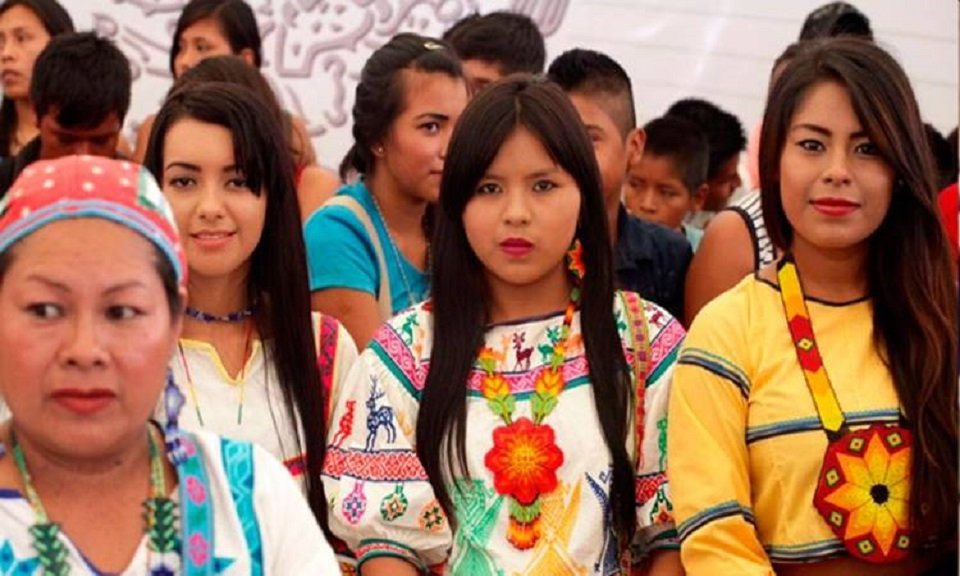

Decendencia

Decienden de poblaciones que habitan en el
territorio actual del pais al iniciarse la colonizacion y
que conservan sus propias intituciones sociales,
culturales, economicas y politica
Los indígenas de América, también llamados aborígenes americanos, amerindios, nativos americanos, originarios de América o indios americanos son los pobladores originarios de América y sus descendientes que mantienen su cultura o se reconocen como tales.nota 1 Algunos autores excluyen de entre los amerindios a los esquimales y a veces también a los pueblos de lenguas na-dené, ya que de acuerdo con la hipótesis amerindia su origen etnolingüístico y llegada a América en sí fue posterior.

Durante las primeras décadas del siglo XIX, una combinación de mutaciones y transformaciones trajo derivaciones en la vida de los varones y las mujeres afrodescendientes de manera diferenciada. En este artículo me propongo considerar el desenvolvimiento de las mujeres madres negras y el modo en el que se verificó la relación con dos procesos novedosos y significativos de este periodo. Hago referencia a la gradual abolición de la esclavitud y a la transición del trabajo esclavizado al trabajo libre. Con esta finalidad he distinguido dos núcleos de análisis principales, que refieren tanto a la Ley de Libertad de Vientres, por un lado, como a las amas de leche negras y el servicio de amamantar, por el otro. Este trazado me da la posibilidad de explorar la manera en que se entretejen las maternidades, esclavitudes y emancipaciones de las mujeres negras en el ámbito urbano de la ciudad de Buenos Aires, como también sobre el modo en que se vincula y entremezcla lo femenino/ género con lo racial.
Resumen
Durante as primeiras décadas do século XIX, uma combinação de mutações e transformações trouxe derivações na vida de homens e mulheres de ascendência africana de forma diferenciada. Neste artigo, proponho considerar o desenvolvimento das mães negras e a forma como o relacionamento com dois novos e significativos processos desse período foi verificado. Refiro-me à abolição gradual da escravidão e à transição para o trabalho livre. Para esse fim, distingui duas áreas principais de análise, que se referem tanto à Lei do Ventre Livre, por um lado, quanto a amas de leite negras e ao serviço de amamentação, por outro. Esse panorama permite explorar a maneira pela qual as maternidades, a escravidão e a emancipação das mulheres negras estão entrelaçadas na área urbana da cidade de Buenos Aires e também a forma como o feminino/gênero está vinculado e intercalado com a raça.